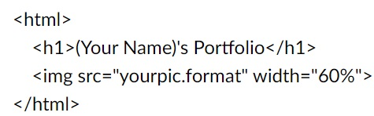

Fernando's Portfolio
Create Your Page
- Go to GitHub Page, you can access it through the following link: https://github.com/.
- Create your account (Sign up) or access it (Sign in) if you already created it before.
- Now that you are logged in, on the up-left corner of the page click the NEW button, so you can create the repository of your page.
- Fill the *Repository name* with the following pattern: your account name + .github.io - when you do that, this repository will automatically host your personal page. For example, my account name is FernandoBDAF and my personal page is FernandoBDAF.github.io.
- Navigate to your repository and hit the "Add file" button (in the high-middle of the page) and choose Upload files. You can drag the index.html file we are going to create in the next step.
- Open the folder of the project in VS Code and select file -> new file. Name it "index.html" and write the code you see in the image behind making the appropriate changes. Drag the photo you want to have on your page to the same folder and update the src tag.

- Now you are good to go, access your page! The address will be the exact name of the repository, look mine as an example: FernandoBDAF.github.io